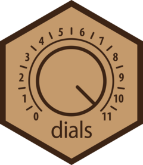
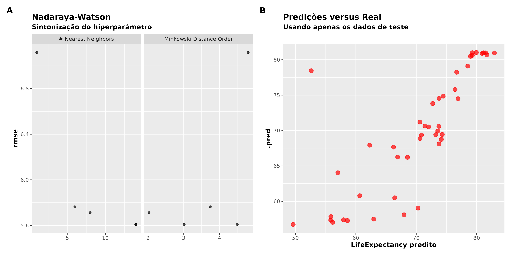

Departamento de Estatística da UFPB.
Do Pré-processamento à API: Um Guia Prático do Uso do tidymodels em Aprendizagem de Máquina
2025-05-07
Aprendizagem de máquina

O que é aprender?
Antes de detalharmos os tipos de aprendizagem de máquina, uma dúvida que poderá surgir é: “O que é aprender?”. “Como a máquina aprende?”.
O que é aprender?
De forma simples, aprender é ganhar conhecimento através de estudo, experiências, por meio de ensinamentos.
Tá, mais como é que a máquina aprende?
Aprendizagem é o processo em que se adquire conhecimento, isto é, é o processo em que utilizamos de algoritmos e fornecemos dados a esses algoritmos para que possamos extrair conhecimento. Nesse processo de aprendizagem, os algoritmos fazem uso de dados para a extressão de conhecimento, através de procedimentos supervisionado, não-supervisionado, semi-supervisionado ou por reforço, a depender do algoritmo que você deseja utilizar.
Aprendizado é o modelo ajustado, isto é, é o conhecimento adquirido após o treinamamento obtido no processo de aprendizagem. Você poderá entender como sendo o modelo ajustado e que utilizamores para a tomada de decisões.

O que é aprender?
Portanto, você poderá entender, basiciamente, existe quatro tipos de aprendizagem, sendo os dois primeiros o que mais focaremos nesse curso e que de longe são os mais utilizados:
- Aprendizagem supervisionada;
- Aprendizagem não-supervisionada;
- Aprendizagem semi-supervisionada;
- Aprendizagem por reforço.
Aprendizagem supervisionada

Poderíamos estar interessados em classificar o tamanho de morangos:
S (Slow): pequeno;
M (Medium): médio;
L (Large): grande.
Aprendizagem não-supervisionada
Nesse tipo de aprendizagem, os algoritmos trabalham sobre dados não rotulados, por exemplo, em uma trarefa de agrupamento.
Os algoritmos verificam se as instâncias observadas poderão ser arranjadas de alguma maneira, por exemplo, usando alguma métrica de distância, formando grupos (clusters).
A ideia é maximizar a distância entre os clusters e minimizar a distância entre os elementos no interior do grupo. Em outras palavras, o que se quer é tornar os grupos mais diferentes possíveis e tornar os elementos dos grupos o mais parecido possível.
Aqui, por não haver rótulos, um problema comum é determinar a quantidade de grupos ideal que muitas vezes são obtidos de forma subjetiva ou por heurísticas. A quantidade de grupos é um dilema!
Aprendizagem não-supervisionada

Após a detecção dos grupos, é preciso analisar o resultado de modo a tentar extrair informações coerentes de modo a saber o que cada grupo representa no problema em questão.
Aprendizagem semi-supervisionada
A aprendizagem semi-supervisionada é uma abordagem na área de aprendizagem de máquina, em que um algoritmo utiliza tanto dados rotulados quanto não rotulados para treinamento. Por exemplo, algoritmos que propagam rótulos, como o Label Propagation, em que rótulos conhecidos são propagados para dados não rotulados com base em sua sua proximidade no espaço de características.
Uma outra abordagem seria misturar modelos (Model Blending), em que diferentes modelos são treinados em diferentes partes do conjunto de dados, por exemplo, um modelo para a parte roturada e um para a parte não rotulada.
Dados: exploração e tratamento

Representação de uma base de dados no formato tidy.
Dados: exploração e tratamento
Poderá ser que um dado atributo apresente informação faltante, e normalmente não optaremos em remover a observação e precisaremos imputar a informação, por exemplo:
- Tomando alguma medida de tendência central como média/moda/mediana dos valores que são conhecidos para aquele atributo;
- Criar um novo valor que é indicação de valor faltante;
- Usar algoritmos como k-nearest neighbors - kNN (k vizinhos mais próximos) para imputar valores coerentes;
- Interpolar os dados.
Esses são alguns exemplos de como podemos imputar observações faltantes. Muitas vezes não podemos nos dar o luxo de percer observações de nossa base de dados.

Dados: exploração e tratamento
Anteriormente eu citei algumas bibliotecas úteis de R para explorar os dados, na fase de tratamento das observações. Porém, não estranhe não ter, até o momento, citado bibliotecas do framework tidymodels, em especial o recipes que é muito utilizado no workflow de aprendizagem de máquina, na fase de pré-processamento dos dados. Muitas dessas transformações são aplicadas como receitas de pré-processamento com o pacote recipes.

O tidymodels será muito útil para nós, mas, aos poucos, seu uso e explicações mais detalhadas serão apresentadas, apesar que em algumas situações mais simples, poderei não utilizá-lo, para expor detalhes que eventualmente não será possível ou estariam camuflados (black box) na utilização do tidymodels.
Para não deixar de valar sobre o tidymodels, explicarei, agora, a sua filosofia e como ele está dividido em outras bibliotecas que são úteis em cada parte do processo de treinamento de um modelo de machine learning.

💻 Tidymodels
Essas diferentes implementações torna confuso trabalhar e testar diferentes modelos ao mesmo tempo.
Uma das primeiras ideias mais conhecidas de unificação de sintaxe do workflow de machine learning, na linguagem R, foi idealizada pelo estatístico Max Khun.
Ele criou a biblioteca caret - Classification And REgression Training de R que é muito bem desenvolvida e abrangente. Você poderá estudar o caret clicando aqui.
Não foi um trabalho simples, veja uma tabela com a quantidade de modelos que o caret suporta, clicando aqui. Então, “por baixo dos panos”, a ideia era unificar a entrada e saída. A biblioteca caret continua sendo mantida, apesar da existência do tidymodels.

💻 Tidymodels
Max Kuhn, atualmente, no momento de escrita desse mateiral, é funcionário da Posit Ltda e foi contratado para estar a frente do desenvolvimento de uma versão “arrumada” (tidy) do caret, que é o tidymodels.

💻 Tidymodels

O workflow (pipeline) do treinamento de um modelo usando o framework tidymodels. Todos os pacotes (rsample, recipes, parsnip, tune, dails, yardstick) são gerenciados pelo pacote tidymodels. Cada um desses pacotes fornece um conjunto de funções úteis em tarefas específicas no workflow de machine learning.
💻 Tidymodels
- rsample: responsável pela reamostragem dos dados, parte importante para que possamos treinar um modelo de aprendizagem de máquina. É nele que encontra-se funções para realizar reamostragem como bootstrap, k-folds cross-validation, nested cross-validation, entre outras.

- recipes: apresenta diversas funções para transformações de variáveis como criação de variáveis dummy, normalização de variáveis, inputação de dados pela média, mediana, kNN, entre outras formas de imputação, transformações de variáveis categórias em numéricas, entre outras funcionalidades. Ele permite que possamos criar uma receita de transformações nos dados para que esses, após transformados, possam entrar no modelo.
- parsnip: é o pacote que unifica as entradas e saídas de diversos pacotes de aprendizagem de máquina de R. Ele possui os motores (engines) que são as comunicações com os algoritmos implementados em diversos pacotes de R que trabalham com tarefas de regressão e classificação, em aprendizagem de máquina.
💻 Tidymodels
Os pacotes tune, dails e yardstick tomará conta da parte de treino do modelo. Os pacote tune e dails são responsáveis pela “tunagem” dos eventuais hiperparâmetros, já o yardstick é responsável pelas métricas de avaliação do modelo.
A biblioteca dails está mais relacionada a criação dos grids para os eventuais hiperparâmetros do modelo. Já o pacote tune, utiliza-se da validação cruzada criada pelo pacote rsample para varrer as combinações de hiperparâmetros criadas pelo dails, i.e., o tune está mais relacionado com a otimização dos hiperparâmetros.


💻 Tidymodels
Todo o fluxo de trabalho é gerido pela biblioteca workflows de R. Em especial, as etapas de feature engineering e especificação do modelo.

💻 Tidymodels

Perceba o papel da biblioteca workflows de R. Basicamente gostaríamos de ter uma automação da faze do tratamento das features realizada com o recipes com a modelagem.
💻 Tidymodels
Não necessariamente iremos utilizar o tidymodels em todos os exemplos e exercícios. Porém, iremos explorar bastante, até o fim do curso, o treinamento de modelos usando o tidymodels. Por tanto, aos poucos, a medida em que exemplos são apresentados e exercícios forem passados, o aprendizado do uso do tidymodels se dará.


Sempre que possível, deveremos colocar as “mãos na massa” 🍝 para que possamos dominar e compreender uma ferramenta computacional. A prática é importante!
Função de risco
Sendo assim, se R(g) possui um valor baixo, então, temos que
g({\bf x}_{n+1}) \approx y_{n+1}, \cdots, g({\bf x}_{n+m}) \approx y_{n+m}.
Regressão linear simples
Aqui não iremos nos preocupar com essas suposições, uma vez que em algorithmic modeling culture, não estamos preocupados com suposições nem interpretações, ok!?
Regressão linear multipla
Grande parte da literatura estatística é voltada para justificar que o método de mínimos quadrados sob um ponto de vista de um estimador de máxima verossimilhança, assim como também para construção de testes de aderência, métodos para construção de intervalos de confiança e teste de hipótese para \beta_i (parâmetros que indexam o modelo), análise de resíduos, entre outros.
Assumir que a verdadeira regressão r({\bf x}) = \mathbb{E}({\bf X}\,|\,Y) é uma suposição muito forte. Contudo, existe, na literatura, justificativas para o uso de métodos de mínimos quadrados para estimar os coeficientes, mesmo quando a regressão real r({\bf x}) não satisfaz a suposição de linearidade.
Regressão linear multipla
O estimador de mínimos quadrados \widehat{\beta} = ({\bf X}^{T}{\bf X})^{-1}{\bf X}^{T}Y é bom, por alguns motivos:
É igual ao estimador de máxima verossimilhança sob normalidade, linearidade e homoscedasticidade, portanto, consistente sob essas condições
É best linear unbiased prediction - BLUE sob linearidade e homoscedasticidade;
O método de mínimos quadrados tem alguma garantia, mesmo sem assumir muitas suposições.
Mínimos quadrados sem suposição de linearidade
Em palavras, o que o Teorema anterior diz é que mesmo quando a regressão verdadeira não é linear, o estimador de mínimos quadrados é consistente para nos conduzir a um bom estimador linear, ou seja, ao menos conseguiremos o melhor estimador linear como uma aproximação à r({\bf x}) que não é linear.
Isso não quer dizer que você terá boas estimativas em todas as situações, muito embora o oráculo \beta_{*}, em muitas situações, terá bom poder preditivo. Em outras palavras, em situações que um problema, em sua natureza, não linear, poderemos alcançar boas estimativas por uma aproximação linear pelo método dos mínimos quadrados.

Leia mais sobre regressão linear
Caso você deseje ler um pouco mais sobre regressão linear sob homocedasticidade e sob heteroscedasticidades, leia o segundo Capítulo de minha dissertação de mestrado intitulada Estimadores Intervalares sob Heteroscedasticidade de Forma Desconhecida via Bootstrap Duplo. Apesar do título, o segundo capítulo é uma revisão do conceito de regressão linear é apresentado de forma didática. Clique aqui para ler.
Ajustando uma regressão linear no R
Caso você não queira implementar o estimador de mínimos quadrados \widehat{\beta} = ({\bf X}^{T}{\bf X})^{-1}{\bf X}^{T}Y, você poderá utilizar a famosa função lm. Na verdade é melhor que não implemente o estimador \widehat{\beta}, uma vez que a função lm, assim como a função glmnet do pacote glmnet, utilizam-se de truques numéricos para um cálculo mais eficiente.
Falaremos do pacote glmnet, um pouco mais a frente, quando abordarmos regressão penalizada. Certo!?

Ajustando uma regressão linear no R
Veja o código do gráfico
library(ggplot2)
url <- "https://github.com/prdm0/dados/raw/main/dados_expectativa_renda.RData"
# Criando um arquivo temporário
arquivo_temp <- tempfile()
# Baixando um arquivo temporário
download.file(url = url, destfile = arquivo_temp)
# Carregando os dados
load(arquivo_temp)
dados_expectativa_renda |>
ggplot(aes(x = GDPercapita, y = LifeExpectancy)) +
geom_point() +
labs(
title = "PIB per Capita versus Expectativa de Vida",
x = "PIB per Capita",
y = "Expectativa de Vida"
) +
geom_smooth(method = "lm", se = FALSE) +
theme(
plot.title = element_text(face = "bold"),
axis.title = element_text(face = "bold")
)
Erro quadrático médio
Portanto, nunca utilize as mesmas observações utilizadas para treinar o modelo, como aquelas que serão utilizadas para se estimar R(g). Nunca! Isso é um pecado mortal! Ok?!
Data Splitting
Essa divisão é feita de forma aleatória, algumas vezes estratificada de acordo com algumas variáváveis. A ideia de aleatorizar é se livrar de problemas de conjunto de dados ordenados. Queremos que tanto no conjunto de treinamento Training quanto no conjunto Testing, na imagem, contenham a mesma diversidade de observações.
Ainda no exemplo de PIB per Capita versus Expectaitiva de Vida, não quero correr o risco de ter no conjunto de treinamento apenas o países com maiores valores de PIB per Capita, caso o conjunto de dados tenha sido ordenado pela variável GDPercapita. Por isso, aleatorizar o conjunto de treinamento e teste é sempre uma ótima ideia. Certo!?
Data Splitting
Agora você entende por que dividimos os dados em treinamento e teste?

Dividimos para obermos um bom estimador do risco utilizando o EQM. 🎁
Leave-one-out cross-validation
Observe a animação abaixo que ilustra o procedimento de leave-one-out cross-validation - LOOCV, em uma amostra de tamanho n = 8. Ao fim, teremos n modelos ajustados, em que calculamos as suas respectivas performances, i.e., com o risco observado, estimamos o risco de R(g).

Leave-one-out cross-validation
Vejo muitas pessoas que usam uma validação cruzada, por exemplo, leave-one-out cross-validation - LOOCV comparando com o método Jackknife e algumas inclusive dizendo ser a mesma coisa. Não, não são!
O algoritmo Jackknife é um procedimento de estimação, e que, por sua vez, deve estar dentro do conjunto de treinamento. Para haver algum Jackknife, a estimativa com n-1 observações deve estar dentro do conjunto de treinamento, em que dentro do treinamento teria a remoção de um observação por vez. Consegue perceber a diferença sutil?

Leave-one-out cross-validation
O método LOOCV converge assintotivamente para o AIC, porém, este, muitas vezes não poderemos calcular diretamente, uma vez que não conhecemos a distribuição conjunta dos dados, i.e., não conhecemos a estrutura probabilística.

Leave-one-out cross-validation
Essa relação entre o LOOCV e o Akaike Information Criterion - AIC foi provada no paper Stone (1977) intitulado An Asymptotic Equivalence of Choice of Model by Cross-Validation and Akaike’s Criterion e publicado no Journal of the Royal Statistical Society, Series B. Clique aqui, se quiser ler o artigo.

k-fold cross-validation
Uma alternativa ao LOOCV é utilizar o método k-fold cross-validation. Nessa abordagem, dividimos o conjunto de dados em k-folds (lotes) disjuntos e com aproximadamente o mesmo tamanho. Dessa forma, temos L_1, \cdots, L_k \subset \{1, \cdots, n\} são, cada um, um conjunto de índices aleatórios associados a cada um dos lotes. A ideia aqui é construir k estimadores da função de regressão, denotados por \widehat{g}_{-1}, \cdots, \widehat{g}_{-k}, em que \widehat{g}_{-j} é criado usando todas as observações do banco de dados, com exceção daquelas do lote L_j, utilizado para validação. O estimador do risco é dado por:
\widehat{R}(g) = \frac{1}{n}\sum_{j=1}^k \sum_{i \in L_j}(Y_i - g_{-j}({\bf X}_i))^2. Perceba que, que o LOOCV é um caso particular do k-fold cross-validation, quando fazemos k = n. Em outras palavras, L_1, \cdots, L_k \subset \{1, \cdots, n\} representam os índices aleatórios do conjunto de treinamento nos k lotes.
k-fold cross-validation
A animação abaixo, ilustra o procedimento de 3-fold cross-validation (k = 3), para uma amostra de tamanho n = 12 observações. Note que os valores que pertencem a cada um dos lotes são aleatórios. Portanto, o procedimento LOOCV é deterministico, já o procedimento de k-fold cross-validation é randomizado.

Perceba que teremos agora apenas 3 modelos. Para cada um desses lotes, calulamos o EQM com o conjunto de teste (parte azul) e treinamos o modelo com o conjunto de treinamento (parte vermelha).
k-fold cross-validation
O termo validação refere-se à parcela do conjunto de treinamento incial que dividimos em validação e treinamento, dentro de uma validação cruzada.
O conjunto Testing na segunda hierarquia da árvore ao lado, só usamos no final para avaliar o desempenho do modelo nesse conjunto. Isto é, usamos o Testing para o cálculo do risco observado.
Perceba que o conjunto de treinamento (Not Testing) é particionado em treinamento e validação. Poderíamos fazer uma única partição, mas o procedimento comumente utilizado é particionar entre Training e Validation uzando algum procedimento de validação cruzada.

k-fold cross-validation
Em alguns livros o conjunto de treinamento é denominado de not-testing (não-teste). Isso, porquê eles querem enfatizar o fato de que o conjunto not-testing é utilizado para treinar/ensinar o modelo e jamais deverá ser utilizado para avaliar o risco preditivo R(g).
Ao usar essa terminologia, os autores dos livros tentam enfatizar que o conjunto de treinamento é usado exclusivamente para ensinar o modelo a aprender os padrões nos dados, enquanto o conjunto de teste é usado para medir quão bem o modelo generaliza esses padrões para dados não vistos anteriormente.
k-fold cross-validation
A imagem abaixo ilustra o procedimento k-fold cross-validation, em que uma 5-fold cross-validation é realizada dentro do conjunto de treinamento. Em cada split, o conjunto verde de observações (fold verde) são utilizados para treinar/ajustar o modelo e o conjunto azul, em cada um dos splits é utilizado para avaliar o risco preditivo R(g) (através, por exemplo do EQM).

Não confunda os folds azuis com o conjunto de teste (Test data), este último utilizado por fim, depois do modelo pronto, para avaliar o desempenho do modelo treinado.
Note também que a validação cruzada também é utilizada para o ajuste de hiperparâmetros, que são parâmetros de sintonização que não dependem dos dados para serem equalizados. Por exemplo, em uma regressão lasso, que veremos adiante, há o hiperparâmetro \lambda que precisamos obter, normalmente por meio de um grid search (sequência finita), por exemplo, \lambda \in [0.5, 1, 1.5, 2, 2.5] de possíveis valores. Cada split pode ser utilizado para avaliar um valor de \lambda, dos possíveis valores dispostos no grid. Aumentaríamos a quantidade de splits para mais valores de \lambda na sequência.
Resumindo: data splitting, validação cruzada e conjunto de validação
A validação cruzada k-fold é particularmente útil quando o conjunto de dados é limitado, pois aproveita ao máximo os dados disponíveis. Além disso, ela permite verificar se o modelo é estável e se seu desempenho varia significativamente com diferentes divisões dos dados. É importante ressaltar que a validação cruzada k-fold pode ser computacionalmente mais cara do que a abordagem do conjunto de validação, uma vez que envolve treinar e avaliar o modelo várias vezes.
Resumindo: data splitting, validação cruzada e conjunto de validação
Um outro detalhe que muitas vezes não é falado é que apesar de temos duas tarefas de estimação, uma envolvendo o conjunto de treinamento, em que treinamos o modelo e outra envolvendo o conjunto de teste, em que queremos estimar o risco R(g), de modo a poder selecionar o melhor modelo, a segunda tarefa é bem mais fácil. É por isso que o conjunto de treinamento tende a ser menor que o conjunto de teste.
⚖️ Balanço viés e variância
A ideia de precisão e exatidão estão ligadas ao viés e variância do modelo g, em que precisão está ligado a ideia de variância pequena e exatidão está ligada a ideia de baixo viés. A ideia é termos um estimador próximo o que ilustra o item d. Muitas vezes temos um estimador nas situações b e c. O ideal é o balanço de viés e variância, que seria o estimador ilustrado pelo item d.

⚖️ Balanço viés e variância
Assim, lembre-se que uma escolha adequada de \widehat{g} nos garante que conseguiremos reduzir o risco preditivo R(g), pois a escolha apropriada implica em escolhermos um estimador de \widehat{g} com balanço entre víes e variância.
Modelos com muitos parâmetros possuem viés relativamente baixo, porém, tendem a ter variância muito alta, em geral, uma vez que precisamos estimar muitos parâmetros. Já modelos com poucos parâmetros, normalmente tendem a ter variância baixa, acompanhados normalmente de um alto viés.
Geralmente, modelos com muitos parâmetros nos levam a termos overffiting (super-ajuste), o que não é bom pois são acompanhados de alta variância. Já modelos muito simplistas nos conduzem à um ajuste muito ruim (underffiting ou sub-ajuste). Entendeu!?

⚖️ Balanço viés e variância
Estude o código
library(ggplot2)
library(tibble)
library(ggplot2)
library(patchwork)
# Função de regressão verdadeira. Na prática é desconhecida.
regressao_verdadeira <- function(x)
45 * tanh(x/1.9 - 7) + 57
observacoes_regressao_real <- function(n, desvio_padrao = 0.2) {
# Permitindo que o mesmo x possa ter dois pontos de y, como ocorre na
# pratica
seq_x <- sample(seq(0, 17.5, length.out = n), size = n, replace = TRUE)
step <- function(x)
regressao_verdadeira(x) + rnorm(n = 1L, mean = 0, sd = desvio_padrao)
tibble::tibble(y = purrr::map_vec(.x = seq_x, .f = step), x = seq_x)
}
# Usaremos uma regressão polinomial para tentar ajustar à regressão -------
regressao_polinomial <- function(n = 30L, desvio_padrao = 4, grau = 1L) {
dados <- observacoes_regressao_real(n = n, desvio_padrao = desvio_padrao)
iteracoes <- function(tibble_data, grau) {
x <- tibble_data$x
iteracoes <- lapply(X = 2L:grau, FUN = function(i) x^i)
result <- cbind(tibble_data, do.call(cbind, iteracoes))
colnames(result)[(ncol(tibble_data) + 1):ncol(result)] <- paste0("x", 2L:grau)
as_tibble(result)
}
if(grau >= 2L)
dados <- iteracoes(dados, grau = grau)
ajuste <- lm(formula = y ~ ., data = dados)
dados$y_chapeu <- predict(ajuste, new.data = dados)
dados |>
dplyr::relocate(y_chapeu, .before = x)
}
plotando <- function(dados){
dados |>
ggplot(aes(x = x, y = y_chapeu)) +
geom_point()
}
mc_ajustes <- function(mc = 100L, n = 50L, desvio_padrao = 5, grau = 1L){
p <-
ggplot(data = NULL) +
coord_cartesian(xlim = c(0, 17.5), ylim = c(0, 110)) +
ylab("Valores estimados")
df <- NULL
for(i in 1L:mc){
df <- regressao_polinomial(n = n, desvio_padrao = desvio_padrao, grau = grau)
p <- p + geom_line(data = df, aes(x = x, y = y_chapeu))
}
p +
stat_function(fun = regressao_verdadeira, col = "red", size= 1.4) +
labs(
title = "Regressão Polinomial",
subtitle = paste("Grau: ", grau)
) +
theme(
plot.title = element_text(face = "bold"),
axis.title = element_text(face = "bold")
)
}
# Fixando uma semente
set.seed(0)
p1 <- mc_ajustes(grau = 1, n = 100, desvio_padrao = 10)
p2 <- mc_ajustes(grau = 7, n = 100, desvio_padrao = 10)
p3 <- mc_ajustes(grau = 70, n = 100, desvio_padrao = 10)
p4 <- mc_ajustes(grau = 200, n = 100, desvio_padrao = 10)
p <- ((p1 | p2) / (p3 | p4)) + plot_annotation(tag_levels = "A")
ggsave(p, file = "imgs/vies_variancia.png", device = "png", width = 40, height = 30, units = "cm")
🎛 Tuning Parameters
No exemplo anterior, note que os parâmetros dos modelos são os coeficientes \beta’s que indexam a regressão polinomial. Porém, perceba que á um parâmetro de sintonização (tuning parameter) que é o valor de p, isto é, qual o grau do polinômio que iremos utilizar.
Normalmente a escolha é feita realizando um grid search por meio de um cross-validation.
No exemplo anterior, fizemos uma simulação e observamos que ao considerar graus nem muito grandes nem muito pequenos, aparentemente teremos escolhas razoáveis.
🎛 Tuning Parameters
Algumas observações gerais a respetio da biblioteca rsample, que são úteis para resolver esse problema:
- Para realizar uma primeira divisão do conjunto de dados (data splitting/hold-out), utiliza-se a função
initial_split; - Para acessar o conjunto de treinamento dos dados, usamos a função
training; - Para acessar o conjunto de teste, usamos a função
testing; - Para constuir todas as divisões da validação cruzada, entre treinamento e validação, no conjunto de treinamento inicial, usamos a função
vfold_cvjá mencionada; - Para acessar o conjunto de treinamento de um split da validação cruzada, usamos a função
analysis; - Para acessar o conjunto de validação, utilizamos a função
assessment.
🎛 Tuning Parameters
Note que realizar uma validação cruzada é importante para podemos selecionar o melhor polinômio, i.e., o melhor valor de p. Caso venhamos negligenciar esse aspecto da análise, iremos cair na falácia de acreditarmos que quanto maior o grau do polinômio, maior será o poder preditivo do modelo. Isso não é verdade e você deverá selecionar o melhor modelo dentro de um esquema de validação cruzada.
No mundo de aprendizagem de máquina, muitos chamam o processo de encontrar o melhor hiperparâmetro de “tunagem”. Em vários modelos, podemos ter mais de um.
🎛 Tuning Parameters
As Figuras abaixo, mostram a avaliação dos polinômios da classe \mathbb{G}, usando o risco estimado \widehat{R}(g) pelo erro quadrático médio - EQM. Porém, a Figura A aprenseta a avaliação dos modelos, usando simplesmente o conjunto de treinamento e a Figura B aprensenta a avaliação do grau do polinômio considerando uma validação cruzada dentro do conjunto de treinamento.

A mensagem equivocada passada pela Figura A é que supostamente aumentar a complexidade do modelo seria uma uma boa alternativa e nos conduziríamos à bons modelos preditivos. Mas sempre se lembre do equilíbrio que temos que ter entre viés e variância. A Figura B mostra que um polinômio com grau próximo à p = 8 é a melhor alternativa.
🎛 Tuning Parameters
Abaixo você poderá acessar o código que soluciona o problema. O parâmetro errado = FALSE da função validação no código que segue, conduz a solução correta (usando a validação cruzada), que sempre você deverá considerar na prática.
Estude o código da solução de exemplo
library(rsample)
library(yardstick)
library(tibble)
library(purrr)
library(ggplot2)
library(patchwork)
# Lendo dados
url <- "https://github.com/prdm0/dados/raw/main/dados_expectativa_renda.RData"
arquivo_temp <- tempfile()
download.file(url = url, destfile = arquivo_temp)
load(arquivo_temp)
dados <-
dados_expectativa_renda |>
dplyr::select(-CountryName) |>
dplyr::rename(y = LifeExpectancy, x = GDPercapita)
iteracoes <- function(tibble_data, grau) {
x <- tibble_data$x
iteracoes <- lapply(X = 2L:grau, FUN = function(i) x^i)
result <- cbind(tibble_data, do.call(cbind, iteracoes))
colnames(result)[(ncol(tibble_data) + 1):ncol(result)] <- paste0("x", 2L:grau)
as_tibble(result)
}
regressao_polinomial <- function(dados, grau = 1L) {
if(grau >= 2L)
dados <- iteracoes(dados, grau = grau)
lm(formula = y ~ ., data = dados)
}
# Divisão dos dados
divisao_inicial <- rsample::initial_split(dados)
treinamento <- rsample::training(divisao_inicial)
teste <- rsample::testing(divisao_inicial) # Teste final
# v-folds cross-validation
validacao <- function(dados, grau = 1L, errado = FALSE, ...){
# Todas as divisões da validacao cruzada
cv <- rsample::vfold_cv(dados, ...)
hiper <- function(i){
treino <- rsample::analysis(cv$splits[[i]]) # Treinamento
validacao <- rsample::assessment(cv$splits[[i]]) # Validacação
ajuste <- regressao_polinomial(dados = treino, grau = grau)
if(errado){
df_treino <- iteracoes(treino, grau = grau)
df_treino <- df_treino |> dplyr::mutate(y_chapeu = predict(ajuste, newdata = df_treino))
yardstick::rmse(data = df_treino, truth = y, estimate = y_chapeu)$.estimate
} else {
df_validacao <- iteracoes(validacao, grau = grau)
df_validacao <- df_validacao |> dplyr::mutate(y_chapeu = predict(ajuste, newdata = df_validacao))
yardstick::rmse(data = df_validacao, truth = y, estimate = y_chapeu)$.estimate
}
}
purrr::map_dbl(.x = seq_along(cv$splits), .f = hiper) |>
mean()
}
plot_avaliacao <- function(dados, errado = FALSE){
# Testando iterativamente, vários valores de p:
p <- seq(1L:11L)
risco <- purrr::map_dbl(.x = p, .f = \(p) validacao(dados = dados, grau = p, errado = errado))
df_risco <- tibble::tibble(p = p, risco = risco)
# Plotando
df_risco |>
ggplot(aes(x = p, y = risco, color = risco)) +
geom_point(size = 5) +
scale_x_continuous(breaks = p) +
scale_y_continuous(breaks = p) +
labs(
title = "Valiando o risco estimado para diversos graus do polinômio",
subtitle = "EQM no conjunto de validação"
) +
theme(
plot.title = element_text(size = 18, face = "bold"),
plot.subtitle = element_text(size = 16),
axis.text = element_text(size = 10),
axis.title = element_text(size = 14, face = "bold")
)
}
# Avaliacão errada versus correta
set.seed(0)
grafico <-
plot_avaliacao(dados, errado = TRUE) +
plot_avaliacao(dados, errado = FALSE) +
plot_annotation(tag_levels = c("A", "B"))
ggsave(grafico, file = "imgs/avaliacao_risco.png", device = "png", width = 50, height = 20, units = "cm", limitsize = F)
plot_bar <- function(grau){
ruim <- validacao(dados, errado = TRUE, grau = grau)
bom <- validacao(dados, errado = FALSE, grau = grau)
df <- tibble::tibble(x = c("Errado", "Certo"), y = c(log(ruim), log(bom)))
df |>
ggplot(aes(x = x, y = y)) +
geom_bar(stat = "identity") +
geom_text(aes(label = y), vjust = 0)
}
📚 Exercícios
Exercício: Com suas palavras, explique o dilema de balanço entre víes e variância.
Exercício: Refaça o exercício do polinômio, utilizando a estratégia de data splitting, em que divide-se o conjunto de dados em treinamento e teste. Utilize o conjunto de teste para calcular a estimativa do risco, usando o EQM.
Exercício: Ainda considerando o exercício do polinômio, implemente uma estratégia de leave-one-out cross-validation e selecione o melhor modelo minimizando a função de risco.
Exercício: Por fim, considerando o exercício do polinômio, rafaça-o utilizando um procedimento de k-fold cross-validation. Considere k = 5. Dica: considere utiliza a biblioteca rsample.
Melhor subconjunto de covariáveis
O estimador de mínimos quadrados - EMQ, na presença de muitas features (covariáveis), i.e., quando temos d grande, possui um baixo poder preditivo devido a possibilidade de overfitting (super-ajuste). Isso, porquê haverá muitos parâmetros a serem estimados, e portanto, a função de regressão estimada \widehat{r}({\bf x}) terá baixo poder preditivo.
Isso se deve ao fato do balanço de viés e variância. Havendo muitos parâmetros, como já tinhamos visto, a variância do modelo poderá ser muito alta.
Portanto, deveremos buscar meios de encontrar o melhor (ao menos um bom) conjunto de covariáveis. Queremos diminuir a variância do Estimador de Mínimos Quadrados!
Melhor subconjunto de covariáveis
A ideia para resolver esse problema é retirar algumas covariáveis do modelo de regressão, com o objetivo de diminuir a variância de \widehat{g}.
Você poderá entender que estamos em busca de um estimador \widehat{g} de g um pouco mais viesado. Trata-se de uma troca em que desejamos reduzir substancialmente a variabilidade do estimador do modelo em troca de um pouco mais de viés.

Melhor subconjunto de covariáveis
Por que essa seria uma escolha ingênua? Pense na situação em que temos d = 30, i.e., trinta covariáveis. Teríamos portanto 2^{30} modelos para ajustar, ou seja, um bilhão e setenta e três milhões, setecentos e quarenta e um mil, oitocentos e vinte e quatro modelos para ajustar. É um a quantidade absurda de modelos para serem estimados!
Se d = 100, teríamos que estimar uma quantidade de modelos que a quantidade estimada de estrelas no universo. A depender do número de covariáveis, esqueça a ideia de estimar 2^d modelos! Não permita se frustrar facilmente. 😏

Regressão Stepwise
Utilizar o algoritmo de seleção de variáveis foward stepwise, ao invés de buscarmos o melhor ajuste entre 2^d possíveis modelos, que muitas vezes é impossível, precisaremos investigar apenas 1 + d(d + 1)/2 modelos. Reduzimos a complexidade da seleção que antes era um problema exponencial. Melhor, não?!
Lasso
O lasso foi desenvolvido pelo Robert Tibshirani, em um artigo publicado no artigo Regression Shrinkage and Selection via the Lasso.


Lasso
O lasso tem como objetivo encontrar um estimador de uma regressão linear que possui risco menor que o de mínimos quadrados, possuindo duas grandes vantagens, em relação ao stepwise:
- Sua solução é mais rápida, ainda que stepwise seja consideravalmente mais rápido do que avaliar 2^d modelos;
- O lasso é capaz de selecionar automaticamente as variáveis mais relevantes para o modelo, reduzindo a dimensionalidade dos dados.
A segunda vantagem ocorre, uma vez que ele realiza uma penalização que leva à estimativas de alguns coeficientes \beta_i igual a zero, eliminando as variáveis menos importantes. Normalmente o vetor \beta é esparso!
Lasso
Quando \lambda é grande, temos que
\sum_{k = 1}^n \left(y_k - \beta_0 - \sum_{j = 1}^d \beta_j x_{k,j}\right)^2 + \lambda \sum_{j = 1}^d |\beta_j| \approx \lambda \sum_{j = 1}^d |\beta_j|, e portanto, \widehat{\beta}_1 = 0, \cdots, \widehat{\beta}_d = 0.
A escolha de \lambda, em geral, é feita utilizado algum método de validação cruzada. 🔍
Lasso
O lasso é extremamente rápido, e nos últimos anos, diversos algoritmos foram construídos para fazer essa taréfa de forma eficiente. O LARS foi um dos primeiros algoritmos desenvolvidos em 2010. Para detalhes, ler Friedman, J. H. (2001). Greedy function approximation: a gradient boosting machine. Annals of statistics, 1189–1232.
No R, a regressão lasso poderá ser feita usando a biblioteca glmnet, assim:
Ridge
A regressão ridge poderá ter uma variância menor que a regressão lasso, porém seu viés poderá ser maior. Outra característica da regressão ridge é que ela possue uma única solução, enquanto a regressão lasso poderá ter multiplas soluções. Os autores também demonstram que a regressão ridge lida melhor com multicolinearidade.
No R, também poderemos utilizar a biblioteca glmnet:
Elastic Net
Na documentação da função glmnet, note que a função realiza o lasso mais o ridge, i.e.,
(1 - \alpha)/2 ||\beta_j||^2_2 + \alpha||\beta_j||_2.
Note que para \alpha = 1, temos uma regressão do tipo lasso, já para \alpha = 0 recaímos para uma penalização do tipo ridge. Para \alpha diferente de zero e um, temos uma elastic net, ok?!
Elastic Net
Nesse tipo de modelo de regressão, combina-se as penalizações da regressão ridge com a utilizada na regressão lasso, herdando os benefícios do uso de cada um dos métodos isoladamente, melhorando a estabilidade das estimativas do lasso, em situações de multicolinearidade entre as variáveis e também permitindo a seleção automática de variáveis.
(1-\alpha)\widehat{\beta}_{L_2,\lambda} + \alpha\widehat{\beta}_{L_1,\lambda}, em que 0 \leq \alpha \leq1. Em R, basta especificar para a função glmnet um valor de \alpha diferente de 0 e 1. Esse valor normalmente é escolhido por um procedimento de validação cruzada.
Exemplo: EMQ, Ridge, Lasso e Elastic Net
Exemplo: Considere uma base de dados simulada, com n = 500 observações, de tal forma que
Y = 3X_{1} - 2X_2 + X_3 + -3X_4 + X_5 + \sum_{i = 6}^{20}0X_i + \varepsilon, em que \varepsilon \sim \text{Normal}(0, 0.5^2) e X_i \sim \text{Normal}(0, 1), independentes, com i = 1, \cdots, 20. Desejamos ajustar quatro modelos de regressão. Para o caso do Estimador de Mínimos Quadrados - EMQ e do modelo Ridge, que não tem seleção automática de variáveis, usaremos todas as variáveis. Desejamos avaliar o risco estimado de cada uma das regressões.
📚 Exercícios
Exercício: Utilizando os dados de vinho vermelho🍷, disponíveis aqui, faça uma pequena análise exploratória dos dados. No link do Kaggle você consegue uma explicação sobre o que significa cada uma das variáveis.

📚 Exercícios
Exercício: Considere agora o conjunto de dados de despesas médicas, disponível aqui. Refaça o mesmo exercício dos dados de vinho vermelho, em que aqui, o objetivo é prever a variável charges. Perceba que algumas variáveis são qualitativas, e portanto, você deverá transformá-las em dummy. Indique os melhores cenários dos quatro modelos e informe qual modelo você utilizaria. Explique! Dica: usando a função step_dummy() da biblioteca recipes, você poderá facilmente transformar variáveis qualitativas em numéricas.

Métodos não-paramétricos
Métodos paramétricos podem impor muitas limitações na solução de um problema de regressão, i.e., em problemas que desejamos estimar a função de regressão r({\bf x}). Por exemplo, nem sempre o melhor estimador linear é um bom estimador para r({\bf x}).
Métodos paramétricos são muitas vezes simplistas e restritivos, em que normalmente abrimos mãos para se ter um estimador um pouco mais viesado, em detrimento da diminuição da variância do modelo. Por exemplo, nas regressões penalizadas que vimos anteriormente (ridge, lasso e elastic-net), penalizamos modelos com muitas covariáveis o que naturalmente aumentará o viés, na maioria das vezes.
k-vizinhos mais próximo próximos
Você poderá utilizar qualquer outra medida de distância além das que foram citadas acima.
É importante perceber que o método kNN não faz uma “compressão” dos dados como a regressão linear que estudamos. Lá, temos uma equação que utilizamos para estimar o valor de Y, após as estimação dos coeficientes do modelo de regressão, ou seja, não precisamos mais dos dados para estimar novas observações. Já no kNN, precisamos sempre nos recorrer aos dados para fazer novas predições, ou seja, sempre que desejarmos calcular r({\bf x}) = \mathbb{E}(Y|{\bf X} = {\bf x}) deveremos sempre fazer uma nova consulta aos dados para calcular a média dos vizinhos mais próximos. O kNN não possui coeficientes para interpretar. Diferentemente da regressão linear, o kNN é um pouco mais “black box”.

k-vizinhos mais próximo próximos
O valor da constante k é um hiperparâmetro do kNN e deverá ser obtido por validação cruzada. Perceba que se k = n temos um modelo muito viesado, porém com variância pequena. Isso, porquê para k = n basicamente iremos tirar uma média dos dados. Para k = 1, teremos um overfitting, uma vez que o estimador irá interpolar os dados.
Exemplo: Considere novamente o conjunto de dados de expectativa de vida versus PIB per Capita disponíveis aqui. Utilizando o tidymodels, vamos construir uma fução que retorne um gráfico com as estimativas do kNN. A função receberá como argumentos o conjunto de dados e o valor de k. Você também poderia utilizar outras bibliotecas, como por exemplo a FNN, ou a KKNN, esta útlima é a que é utilizada internamente na biblioteca parsnip do tidymodels.

k-vizinhos mais próximo próximos
Abrindo apenas um parêntese, o tidymodels refere-se a um conjunto de pacotes que são úteis para o tratamento, treinamento, tunagem e avaliação de modelos de aprendizagem de máquina, em que o parsnip implementa as engines (algoritmos/motores) que iremos utilizar para treinar um modelo. Na verdade, os algoritmos estão implementados em pacotes de terceiros e não precisamente no parsnip. Porém, o parsnip unifica a sintaxe de diversos algoritmos implementados em pacotes separados.
k-vizinhos mais próximo próximos
Estude o código! Ele fornece a solução para o exemplo.
Solução pelo método knn do exemplo anterior
library(tidymodels)
library(glue)
library(dplyr)
library(ggplot2)
library(patchwork)
tidymodels::tidymodels_prefer()
# Lendo dados
url <- "https://github.com/prdm0/dados/raw/main/dados_expectativa_renda.RData"
arquivo_temp <- tempfile()
download.file(url = url, destfile = arquivo_temp)
load(arquivo_temp)
dados <-
dados_expectativa_renda |>
dplyr::select(-CountryName) |>
dplyr::rename(y = LifeExpectancy, x = GDPercapita)
knn_exp_pip <- function(dados, k = 1L){
# Criando receita
receita <- recipe(y ~ x, data = dados)
# Definindo o modelo
modelo_knn <- nearest_neighbor(neighbors = k) |>
set_mode("regression") |>
set_engine("kknn")
# Workflow
ajuste_final <-
workflow() |>
add_model(modelo_knn) |>
add_recipe(receita) |>
fit(data = dados)
# Retornando previsoes
y_chapeu <- predict(ajuste_final, new_data = dados)
dados <-
dados |>
mutate(y_chapeu = y_chapeu$.pred)
dados |>
ggplot() +
geom_point(aes(x = x, y = y), size = 3) +
geom_line(aes(x = x, y = y_chapeu), col = "red", alpha = 0.6, size = 2) +
labs(title = "k-nearest neighbours", subtitle = glue("k = {k}")) +
theme(
title = element_text(face = "bold")
)
}
p1 <- knn_exp_pip(dados, k = 1L)
p2 <- knn_exp_pip(dados, k = 7L)
p3 <- knn_exp_pip(dados, k = 10L)
p4 <- knn_exp_pip(dados, k = 200L)
p <- p1 + p2 + p3 + p4 + plot_annotation(tag_levels = "A")
ggsave(p, file = "imgs/knn_plot.png", width = 50, height = 30, units = "cm")Nadaraya-Watson
Portanto, com o argumento dist_power da função nearest_neighbor, do pacote parsnip, você poderá especificar o valor de p, que inclusive poderá ser um hiperparâmetro, podendo ser obtido por meio de uma validação cruzada.
No exemplo não iremos fazer a validação cruzada, pois apenas queremos implementar uma função em que seja possível experimentar o método para diferentes valores de h e diferentes funções de kernel.
Nadaraya-Watson
Solução do exempĺo de Nadaraya-Watson
library(tidymodels)
library(glue)
library(dplyr)
library(ggplot2)
library(patchwork)
tidymodels::tidymodels_prefer()
# Lendo dados
url <- "https://github.com/prdm0/dados/raw/main/dados_expectativa_renda.RData"
arquivo_temp <- tempfile()
download.file(url = url, destfile = arquivo_temp)
load(arquivo_temp)
dados <-
dados_expectativa_renda |>
dplyr::select(-CountryName) |>
dplyr::rename(y = LifeExpectancy, x = GDPercapita)
nadaraya_watson_exp_pip <- function(dados, h = 1, ...){
# Criando receita
receita <-
recipe(y ~ x, data = dados) |>
step_normalize()
# Definindo o modelo
modelo_knn <- nearest_neighbor(dist_power = h, ...) |>
set_mode("regression") |>
set_engine("kknn")
# Workflow
ajuste_final <-
workflow() |>
add_model(modelo_knn) |>
add_recipe(receita) |>
fit(data = dados)
# Retornando previsoes
y_chapeu <- predict(ajuste_final, new_data = dados)
dados <-
dados |>
mutate(y_chapeu = y_chapeu$.pred)
dados |>
ggplot() +
geom_point(aes(x = x, y = y), size = 3) +
geom_line(aes(x = x, y = y_chapeu), col = "red", alpha = 0.6, size = 2) +
labs(title = "Nadaraya-Watson", subtitle = glue("h = {h}")) +
theme(
title = element_text(face = "bold")
)
}
p1 <- nadaraya_watson_exp_pip(dados, h = 1, weight_func = "gaussian")
p2 <- nadaraya_watson_exp_pip(dados, h = 1000, weight_func = "gaussian")
p <- p1 + p2 + plot_annotation(tag_levels = "A")
ggsave(p, file = "imgs/nadaraya_watson.png", width = 30, height = 15, units = "cm")Tidymodels kNN e Nadaraya-Watson
Workflow completo do treimanento de um modelo KNN.
library(tidymodels)
library(dplyr)
library(ggplot2)
library(patchwork)
# Resolvendo eventuais conflitos entre tidymodels e outros pacotes eventualmente
# carregados:
tidymodels::tidymodels_prefer()
# Lendo a base de dados:
url <- "https://github.com/prdm0/dados/raw/main/dados_expectativa_renda.RData"
arquivo_temp <- tempfile()
download.file(url = url, destfile = arquivo_temp)
load(arquivo_temp)
dados_expectativa_renda <-
dados_expectativa_renda |>
dplyr::select(-CountryName)
# Setando uma semente
set.seed(0)
# Divisão da base de dados ------------------------------------------------
# Divisão inicial (treino e teste)
splits <-
rsample::initial_split(
dados_expectativa_renda,
strata = "LifeExpectancy",
prop = 0.8
)
# O conjunto de dados de treinamento será utilizado para ajustar/treinar o
# modelo:
treinamento <- rsample::training(splits)
# O conjunto de teste será utilizado apenas no fim, para avaliar o desempenho
# preditivo final do modelo:
teste <- rsample::testing(splits)
# Criando uma receita para os dados ---------------------------------------
# Poderia ter passado o conjunto treinamento ou posso passar o conjunto "splits".
# O comando recipes já entende que deverá utilizar o conjunto de treinamento.
receita <-
recipes::recipe(formula = LifeExpectancy ~ ., data = treinamento) |>
step_YeoJohnson(all_predictors()) |> # Ajuda na normalização dos dados. Pode ser bom!
step_normalize(all_predictors()) # Normalizando variáveis numéricas.
# Construindo modelo kNN --------------------------------------------------
modelo_knn <-
parsnip::nearest_neighbor(neighbors = tune()) |>
parsnip::set_mode("regression") |>
parsnip::set_engine("kknn")
# Construindo um workflow (pipeline) --------------------------------------
wf_knn <-
workflows::workflow() |>
workflows::add_recipe(receita) |>
workflows::add_model(modelo_knn)
# Cross-validation --------------------------------------------------------
cv <-
treinamento |>
rsample::vfold_cv(v = 10L, strata = "LifeExpectancy")
# Busca do hiperparâmetro k -----------------------------------------------
metrica <- metric_set(rmse)
# Extraindo e atualizando range do parâmetro ------------------------------
update_parametros <-
wf_knn |>
extract_parameter_set_dials() |>
update("neighbors" = neighbors(c(1, 50)))
# Tunagem -----------------------------------------------------------------
meu_grid <- dials::grid_max_entropy(update_parametros, size = 60)
tunagem <-
tune::tune_grid(
wf_knn,
resamples = cv,
grid = meu_grid,
metrics = metrica,
control = control_grid(save_pred = TRUE, verbose = TRUE)
)
p_hiper <- autoplot(tunagem) +
labs(title = "KNN - Seleção do número k (vizinhos)", subtitle = "Sintonização do hiperparâmetro (valor de k)") +
theme(
title = element_text(face = "bold")
)
# Atualizando workflow ----------------------------------------------------
wf_knn <-
wf_knn |>
finalize_workflow(select_best(tunagem))
# Ajustar o modelo ao conjunto de treinamento e avaliar no teste --------
ajuste_final <- last_fit(wf_knn, splits)
# Ajuste final com toda a base de dados -----------------------------------
modelo_final <- fit(wf_knn, data = dados_expectativa_renda)
# Visualizando as predições na base de treino
p_ajuste <- ajuste_final$.predictions[[1L]] |>
ggplot(aes(x = LifeExpectancy, y = .pred)) +
geom_point(size = 3, alpha = 0.7, col = "red") +
labs(
title = "Predições versus Real",
subtitle = "Usando apenas os dados de teste"
) +
xlab("LifeExpectancy") +
xlab("LifeExpectancy predito") +
theme(
title = element_text(face = "bold")
)
# Unindo os dois plots
p <- p_hiper + p_ajuste + plot_annotation(tag_levels = "A")
# Salvando gráficos
ggsave(p, file = "imgs/plot_hiper_ajuste_tidymodels_knn_whatson.png", width = 30,
height = 15, units = "cm")O pacote dials fornece três funções o grid de parâmetros. São apenas funções que criam grids para os hiperparâmetros, segundo algumas metodologias, mas que na prática não há garantias de qual irá funcionar melhor. A ideia é experimentar e, por meio de uma validação cruzada, decidir por qual utilizar. Normalmente, a grid_max_entropy, utilizada no código acima, funciona bem.
Tidymodels kNN e Nadaraya-Watson
Para demonstar que podemos realizar transformações (receitas) na base de dados, entre do processo de treinamento, foi realizado duas transformações na variável GDPercapita. A primeira foi a Yeo–Johnson transformation e a segunda foi uma simples normalização dos dados (subitrair da média e dividir pelo desvio padrão). A transformação de Yeo–Johnson é uma transformação semelhante a de Box-Cox. A transformação de Yeo–Johnson trata de situações que a transformação de Box-Cox não trata. Por exemplo, ela trata de valores negativos e zero.
A ideia do steps utilizados na faze de pré-processamento dos dados, em que utilizamos o pacote recipes do R, é que para novas observações, depois do modelo ajustado, essas transformações serão automaticamente aplicadas aos novos dados.
Tidymodels kNN e Nadaraya-Watson

## Tidymodels kNN e Nadaraya-WatsonPodemos visualizar a melhor combinação de hiperparâmetros, segundo \widehat{R}(g) usando fazendo:
Comparando dois ou mais modelos
Você poderia perguntar: “Certo, mais tenho como comparar dois ou mais modelos de uma única vez?”
A resposta é Sim!
Suport Vector Regression Machine
Métodos de regressão que se baseiam em panalização em RKHS são uma generalização da Equação 4, em que a função objetivo nesse caso é dada por:
\argmin_{g \in \mathcal{H}_k} \sum_{k = 1}^n L(g({\bf x}_k, y_k)) + \lambda||g||_{\mathcal{H}_k}^2, \tag{5} em que \mathcal{H}_{k} é um RKHS e L é uma função adequada para o problema em questão. Calma que vai ser relativamente simples definir \mathcal{H}_{k}, uma vez que isso é feito utilizando funções kernel, em particular, o kernel de Mercer.
Suport Vector Regression Machine
O termo ||g||_{\mathcal{H}_k}^2 na Equação 5 reflete a suavidade das funções em \mathcal{H}_k e cada espaço poderá conter uma noção de suavidade diferente, a depender da função de kernel escolhida. Sim, a função de kernel e função de perda L são escolhidas pelo usuário da metodologia.
É claro que para diferentes kernel (kernel de Mercer), poderemos ter diferentes resultados que pode ser avaliado em um procedimento de validação-cruzada (cross-validation). O parâmetro \lambda é um hiperparâmetro que podemos obter dentro de uma validação-cruzada, testando, por exemplo, um grid de parâmetros, para selecionarmos um \lambda que forneça o melhor risco estimado \widehat{R}(g).
A parcela ||g||_{\mathcal{H}_k}^2 mensura a suavidade das funções em \mathcal{H}_k. Assim como g, ||g||_{\mathcal{H}_k}^2 será definidas em termos da função de kernel, e essa é a grande sacada!
Suport Vector Regression Machine
Em se tratando de estimadores de regressão, Support Vector Regression Machines, utiliza-se uma função de perda diferente da quadrática, como definido em Drucker, H., Burges, C. J., Kaufman, L., Smola, A. J. & Vapnik, V. (1997). Support vector regression machines em Advances in neural information processing systems.
Eles definem a seguinte função de perda L(g({\bf x}_k, y_k)) = (|y_k - g({\bf x}_k)| - \varepsilon)_{+}, que assume o valor 0 se |y_k - g({\bf x}_k)| < \varepsilon e assumirá |y_k - g({\bf x}_k)| - \varepsilon, caso contrário.
🌳 Árvores de regressão
A ideia de uma árvore 🌳 pura é de que “todo mundo” que cai em uma dada folha é muito homogêneo em relação a variável resposta (ao rótulo/label).
Em uma árvore de regressão, a maneira mais simples de definir pureza é utilizar o EQM.
🌳 Árvores de regressão
Para limitar a profundidade da arvore T a ser estimada, um parâmetro de penalização/complexidade poderá ser introduzido na Equação 8. Assim, o problema consistem em obter regiões e pontos de cortes que minimize:
SSE + \alpha|T|, em que \alpha > 0 é o hiperparâmetro de complexidade do modelo e |T| é um valor inteiro que define a profundidade máxima da árvore. Por exemplo, |T| na biblioteca rpart é definido pelo parâmetro tree_depth em 30. Normalmente nos concentramos em em tunar o parâmetro cost_complexity que é o \alpha.
🌳 Árvores de regressão
O parâmetro de complexidade/custo é um hiperparâmetro, e deverá ser estimado dentro de um procedimento de validação cruzada.
🌳 Árvores de regressão
Algumas observações sobre a árvore 🌳 de regressão:
- É um método não-paramétrico;
- Pode ser representado graficamente;
- É útil na análise exploratória dos dados do problema em questão;
- Pode ser utilizada para selecionar variáveis. Aparentemente, as variáveis que pertence à árvore tem uma maior importância para o problema em questão;
- Poderá trabalhar com variáveis numéricas, mas também poderá trabalhar com variáveis categóricas;
- A árvore é robusta na presença de variáveis irrelevantes.
🌳 Árvores de regressão
Experimente alterar o parâmetro de complexidade e perceba como ele influencia nas regições da árvore de regressão. Quando maior o valor, maior a penalidade, e portanto, mais simples será a árvore de regressão que irá estimar os valores de Y_i com base em X_i.
🌳 Árvores de regressão
Algumas outras características das 🌳 árvores de regressão são:
- A função de regressão estimada \widehat{r}({\bf x}) é constante por partes, i.e., em uma folha 🍃 tendemos predizer que vários indivíduos distintos tem o mesmo valor de \widehat{r}({\bf x});
- Em uma árvore 🌳 de regressão as interações entre variáveis são consideradas de forma automática, enquanto em uma regressão as interações são introduzidas como os produtos entre covariáveis;
- Elas são uma espécie de “samambaias”, em que crescem para baixo;
- É fácil introduzir variáveis categóricas 🎉;
- Uma pessoa sem muito conhecimento poderá estimar \widehat{r}({\bf x}), dada uma árvore, para cada nova observação {\bf x}.

Combinando predições - bagging
Portanto, é importante ficar claro que o bagging é uma metodologia genérica que poderá ser aplicada em situações ao qual desejamos combinar modelos. Por exemplo, o método ramdom forest que veremos mais a frente é uma pequena modificação de um bagging de árvores de regressão que vimos anteriormente. Na verdade o ramdom forest, assim como as árvores de decisões podem ser utilizadas também para problemas de classificação, como veremos mais adiante no curso.
Combinando predições - bagging
Note que se \widehat{g_1}({\bf x}) e \widehat{g_2}({\bf x}) então \mathbb{E}(\widehat{g}_1({\bf x})|{\bf x}) = \mathbb{E}(\widehat{g}_2({\bf x})|{\bf x}) = r({\bf x}). Isso faz com que a última parcela da equação anterior seja zero. Se além disso, se os estimadores possuem a mesma variância, então a decomposição do risco preditivo combinado é simplificada e dada por:
\overbrace{\mathbb{E}[(Y - \widehat{g}({\bf x}))^2|{\bf x}]}^{\text{Risco preditivo combinado}} = \mathbb{V}[Y|{\bf x}] + \frac{1}{2}\mathbb{V}[\widehat{g}_i({\bf x})| {\bf x}] \leq \underbrace{\mathbb{E}[(Y - \widehat{g}_i({\bf x}))^2 | {\bf x}]}_{\text{Risco preditivo individual}}, \tag{9} para um dado i, com i = 1, 2. Dado as suposições de estimadores não-viesados, variância iguais e que os estimadores são não-correlacionados, a Equação 9 poderia ser generalizada para o caso de mais de dois estimadores, no nosso caso, para mais de duas árvores de regressão 🌳. Basta utilizar indução matemática!
Combinando predições - bagging
Devemos notar, contudo que, para que tenhamos árvores 🌳 aproximadamente não-viesadas, não devemos “podar” as árvores️ 🌳. Muito embora elas possam aprensenta overfitting quando consideradas individualmente o risco preditivo combinado irá diminuir.
Portanto, seja B o número de pseudo-amostras bootstrap, i.e., amostras obtidas da amostra original com reposição. Então, o estimador combinado em um procedimento de bagging é dado por:
\widehat{g}({\bf x}) = \frac{1}{B}\sum_{b = 1}^B \widehat{g}_b({\bf x}).
Combinando predições - bagging
Uma observação importante é que o bagging pode ser ruim em modelos quando utilizado em modelos intrinsecamente estáveis, como é o caso de modelos lineares de regressão, kNN, regressão logística, entre outros. O procedimento de bagging costuma ser eficaz quando são utilizados em modelos que possuem uma alta variância e que tendem a ter overfitting, como o caso da árvore de decisão profunda (árvores de regressão e de classificação).
Combinando predições - bagging
Uma forma de perceber a estabilidade de um modelo de aprendizagem de máquina é avaliar as predições do modelo em diferentes partições do conjunto de dados, por exemplo, em um procedimento de validação cruzada repetida. A função rsample::vfold_cv(), permite a possibilidade de retepir uma validação cruzada por meio do argumento repeats, que por default é igual à 1.
Uma outra forma seria utilizar um procedimento de bootstrap não-paramétrico (reamostrar da amostra com reposição) e treinar o modelo em cada pseudo-amostra bootstrap e avaliar a variabilidade das estimativas no conjunto de validação.
Uma outra forma seria avaliar a curva de aprendizado do modelo. Essa curva poderá ser obtida treinando o modelo em diferentes tamanhos de conjunto de treinamento, em que observa-se como varia a peformance do modelo nos diferentes tamanhos do conjunto de treinamento.
📚 Exercícios
Considere a variável aleatória Y_i \sim \mathcal{N}(\sin(X_i), \sigma^2), com X_i \in \mathcal{U}(0, 10)\,, \forall i.
Exercício: Avalie a estabilidade de uma árvore de regressão usando um validação cruzada repetida. Construa um gráfico com os riscos observados na validação para um \sigma^2 fixo.
Exercício: Avalie a estibilidade usando um procedimento de bootstrap. Construa um gráfico com os riscos observados na validação para um \sigma^2 fixo.
Exercício: Por fim, avalie a estabilidade utilizando avaliando a curva de aprendizado do modelo.
🚀 Boosting
Da mesma forma que métodos como bagging e random forest, os métodos de boosting também tem como objetivo agregar diferentes estimadores da função de regreção r({\bf x}). A ideia desses métodos que combinam diferentes estimadores da função de regressão é melhora a precisão e a performance preditiva dos modelos de máquina, convertendo vários aprendizes fracos em um único modelo de aprendizado forte.
O boosting 🚀 funciona construindo os modelos de forma sequencial, dando mais peso às instâncias que foram classificadas incorretamente nos modelos anteriores. O funcionamento do boosting é semelhante ao bagging e random forest, exceto pelo fato de que a árvore irá crescendo sequencialmente: cada árvore é “cultivada” 🌱🚿🌳 usando informações de árvores crescidas. Boosting não envolve amostragem bootstrap; em vez de cada árvore é ajustada em uma versão modificada do conjunto de dados original.

🚀 Boosting
Existem diversas variações e implementações de boosting com diversas implementações distintas em diferentes frameworks de aprendizagem de máquina. Aqui, será descrito o conceito geral, sendo este a forma mais usual do boosting.
No boosting, como mencionado anteriormente, o estimador \widehat{g}({\bf x}) é consturído incrementalmente, i.e., de forma sequencial, melhorando a cada passo. Inicialmente considera-se \widehat{g}({\bf x}) \equiv 0. Fazer \widehat{g}({\bf x}) \equiv 0 estamos iniciando um estimador com alto viés, porém, com variância muito baixa, a saber, variância zero.
A cada passo do algoritmo, procuramos obter uma árvore menos viesada, porém, como mencionado em anteriormente, quadando falamos sobre o trade off entre viés e variância, obtemos uma árvore atualizada com uma variância um pouco maior. Por isso é importante partir de uma árvore inicial com variância muito baixa.
🚀 Boosting
Uma outra forma de obter um valor adequado de B é parar de adicionar iterações quando o risco observado começa a aumentar. Lembre-se que há um trade off entre viés e variância, em que as iterações começam por um estimador \widehat{g} com variância nula e na medida que as iterações progridem, \widehat{g} aumenta sua variância em troca da diminuição do viés. Para algum valor de B o estimador poderá perder um pouco de performance. A ideia é escolher um valor de B antes de atingir uma piora de \widehat{R}(g) (risco observado). Essa estratégia é denominada de early stopping ⌛.
Muito embora aqui apresentamos o algoritmo boostring em um contexto de árvores de regressão, esse algoritmo é genérico e poderá ser utilizado como estatégia para combinar modelos que são individualmente fracos.

📚 Exercícios
Exercício: Refaça o exercício anterior para outras cidades. Acesse os dados clicando nos nomes das cidades abaixo:
🧠 Redes neurais artificiais
Cada nó (neurônio) de uma camada posterior, em uma rede feedforward, i.e., redes com topologias cujo os sinais são propragados para frente, são transformações dos sinais dos neurônios das camadas anteriores.
É importante deixar claro que existem diversas topologias de redes neurais, em que o número de camadas ocultas e o número de neurônios que irá compor cada uma das camadas é decidido por quem faz a análise. São hiperparâmetros que poderão ser investigados de modo a reduzir o risco preditivo R(g).
Você poderá visualizar a representação de diversas topologias/arquiteturas de RNAs clicando aqui. Esses são apenas exemplos de topologias de redes e você poderá em uma pesquisa rápida na internet encontrar diversas outras representações. Muitas delas já encontram-se implementadas em diversos frameworks de aprendizagem de máquina.
🧠 Redes neurais artificiais
Diversas arquiteturas de redes neurais já foram experimentadas. Por exemplo, algumas são úteis para problemas de classificação de imagens, outras possuem uma performance melhor para classificação de áudios, outras com boa performance em problemas de regressão, e assim por diante. Por exemplo, as RNAs feedforwards (redes de propagação direta), em suas diferentes topologias/arquiteturas, possuem boa performance em problemas de regressão, classificação, reconhecimento de padrões, entre outros. Sendo assim, é possível tratar uma gama muito ampla de problemas com redes neurais feedforwards. 🎉
Uma rede feedforward normalmente terá limitações quando se trata de capturar dependências temporais. Porém, em muitos problemas em que não há uma dependência temporal nos dados, as redes feedforwards poderá ser uma escolha conveniente.
🧠 Redes neurais artificiais
Considerando a rede apresentada na Figura 1, para uma dado vetor de entrada {\bf x} = (x_1, x_2, x_3), o sinal em um dado neurônio j da camada oculta é calculado como
\overbrace{x_j^1}^{\text{Neurônio j da camada 1}} := f\left(\beta_{0,j}^0 + \sum_{i = 1}^3 \beta_{i,j}^0 x_{i}^0\right), em que x_i^0 = x_i, para i = 1, 2, 3 e f é uma função definida pelo usuário, que denominaremos função de ativação. A função de ativação desempenha um papel crucial em um neurônio de uma RNA. Ela é responsável por introduzir não-linearidade nos cálculos realizados pelo neurônio, permitindo que a RNA seja capaz de aprender e representar relações complexas nos dados.
🧠 Redes neurais artificiais
Os parâmetros \beta_{0,j}^l, nas equações do sinal que será transmitido, que está em todos os neurônios de uma camada oculta é denominado de viés, ou, bias no inglês. O viés nos neurônios de uma RNA é crucial para permitir que a rede aprenda relações complexas e não-lineares nos dados, além de se adaptar a diferentes deslocamentos e tendências presentes nos dados do mundo real. Ele faz parte dos parâmetros treináveis da rede, que são ajustados durante o processo de treinamento para otimizar a capacidade da rede de fazer previsões ou classificações precisas. Sua função é aumentar ou diminuir a entrada líquida, de forma a transladar a função de ativação no eixo.
A propagação das observações das covariáveis por uma RNA é feita sequencialmente nessas camadas.
🧠 Redes neurais artificiais
Se a RNA possui como função de ativação a função identidade f(x) = x e nenhuma camada oculta, a Equação 10 se reduz à uma regressão linear que estudamos anteriormente. 🎉
Nas RNAs, como já mencionado anteriormente, topologias mais complexas são admitidas, podendo retroalimentação, em que o sinal de uma camada posterior poderá para retroalimentar camadas anteriores. Mais detalhes aprofundados da teoria de RNAs podem ser obtidos Goodfellow, I., Bengio, Y. and Courville, A. Deep Learning. The MIT Press Cambridge, Massachusetts London, England. (2017). Clique aqui.
🧠 Redes neurais artificiais
Para minimizar a Equação 11, podemos fazer uso de métodos numéricos. O método que mais conhecido para essa tarefa é o backpropagation, que nada mais é do que um método de gradiente descendente executado em uma determinada ordem específica. Nesse método, o gradiente descendente é calculado de trás para frente, i.e., primeiro atualizam-se os coeficientes da última camada, depois se atualizam os coeficientes da camada anterior, e assim por diante. Por isso o o termo back é utilizado no algoritmo.
A busca por uma solução global ou mínima global em uma função de perda não é garantida pelo backpropagation. O algoritmo pode convergir para mínimos locais, em que a função de perda é relativamente baixa dentro de uma região, mas esses mínimos locais podem não ser os melhores em termos de desempenho geral da rede neural. Portanto, o algoritmo de backpropagation em si não é uma técnica de otimização global.
🧠 Redes neurais artificiais
Muitas variações do algoritmo backpropagation surgiram, como é o caso do gradiente descendente estocástico, que nada mais é que o algoritmo backpropagation em apenas uma parte do conjunto de treinamento, denominados de lotes ou mini-batches 📦. Esses lotes são sorteados aleatoriamente e de tamanhos aproximadamente iguais. É utilizado apenas um desses lotes por vez, durante o processo de atualização dos pesos da RNA. Esse de atualização aumenta a eficiência computacional, reduz o uso de memória, introduz estocasticidade que pode evitar mínimos locais indesejados permitindo, assim, uma exploração mais ampla do espaço de parâmetros.
Com o gradiente descendente estocástico, o problema de overffiting é menor. Essa metodologia realiza uma espécie de regularização da rede e possui boas propriedades que ainda não são muito bem entendidas.
🧠 Redes neurais artificiais
No conceito de gradiente descendente estocástico, a atualização dos pesos é realizada em cada um dos lotes 📦. Dizemos, portanto, que o treinamento ocorreu em uma época. O conceito de época (epoch) 🕒 é comum em RNA e consiste em realizar o treinamento com todos os batches. Normalmente, escolhemos treinar nossa rede usando várias épocas, i.e., em cada época novos lotes são sorteados, permitindo que a rede não aprenda padrões dependentes da ordem dos dados de treinamento, ajudando expor a rede a uma diversidade de exemplos, tornando o aprendizado mais robusto.
Uma forma muito comum de tentar regularizar uma RNA e diminuir o overfitting é realizar dropout, que consiste em sortear neurônios que não irão ser atualizados. Em palavras, consistem em “fingir” que não existem alguns neurônios no processo de atualização dos pesos. Também podemos introduzir uma penalização, assim como na regressão lasso.